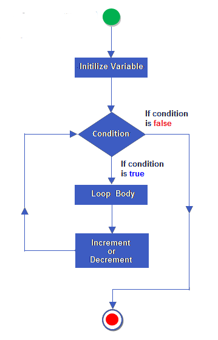

Intro To C Programming Beginner + Advance Workshop
Press Spacebar for next slide.
Esc or 'o' for overview.
There's only one rule.
- Every question is important.
Let's begin.
Uses of C

Solving Real Problems

Building Awesome

Score in UPTU

To get Hacker's Swag
What is C ?
- C is the third letter of English alphabets . lol !
- It’s a computer programming language .
- That means, you can use C to give your computer instructions to follow .

Dennis Ritchie
And this guy made it .
First Code of Every Geek
#include<stdio.h>
int main()
{
printf("Hello World!");
return 0;
}
What was the result??

Line By Line BreakDown
#include<stdio.h>
To teach C, how to take input and display output.
int main{
main() is the door through which compiler enters your programme .
printf("Hello World");
This tells C to show output.
return 0; }
The program ended.
The general form of printf() function is:
printf(" <format string>" , " <list of variables>);
| %f | for printing Real Values |
| %d | for printing Integer Values |
| %c | for printing Character Values |
scanf() Function
scanf(" <format string>" , " <variable_name>);
| %f | for receiving Real Values |
| %d | for receiving Integer Values |
| %c | for receiving Character Values |
Let's Greet!!
A program to input the name of the person and print"hello _name_ ,welcome to the c programming workshop.."

Operators with their Precedence
| Unary | + - ! ~ ++ -- (type) * & sizeof | Right to Left |
| Multiplicative | * / % | Left to Right |
| Additive | + - | Left to Right |
| Shift | << >> | Left to Right |
| Relational | < <= > >= | Left to Right |
| Equity | == != | Left to Right |
| Bitwise AND | & | Left to Right |
| Bitwise XOR | ^ | Left to Right |
Table Continued....
| Bitwise OR | | | Left to Right |
| Logical AND | && | Left to Right |
| Logical OR | || | Left to Right |
| Conditional | ?: | Right to Left |
If Statements
Syntax:
if(exression)
statement;
Example:
if(3 + 2 % 5)
printf("It works");
if(a=10)
printf("Even this works");
if(-5)
printf("Suprisingly even this works");
Note: In C a non-zero value is considered to be true, whereas a 0 is considered to be false.
If Else Statement
if(test expression){
statement to execute
}
else {
statement to execute
}
Ternary Operator
(as a subsitute for if-else statement)
condition ? expression 1 : expression 2;
int x,y;
scanf("%d",&x);
y=(x > 5 ? 3 : 4);
This statement will store 3 in y if x is greater than 5, otherwise it will store 4 in y.
The equivalent if statement will be
if( x > 5 )
y = 3 ;
else
y = 4 ;

Ques Time?
Ques : Take values of length and breadth of a rectangle from user and check if it is square or not.
Input:
5 3
4 4
Output:No
Yes
Solution
#include<stdio.h>
int main() {
int x,y;
scanf("%d %d", &x,&y);
if(x==y)
printf("Yes");
else
printf("No");
return 0;
}

Awesome! Your program can make important decisions now .

LOOPS
- For
- While
- Do While
For-Loop
Syntax:
for(initialise counter ; test counter ; update counter)
{
do this;
and this;
and this;
}
main()
{
int i;
for(i=0 ; i <= 10 ; i++)
printf("%d ",i);
}
Output: 1 2 3 4 5 6 7 8 9 10
Flow of the For Loop
While Loop
Syntax:
initialise loop counter ;
while(test loop counter using a condition)
{
Do this;
And this;
Update loop counter;
}
Do While Loop
Syntax:
do
{
this;
and this;
and this;
}
while(this condition is true);
Note: This loop executes for at least once irrespective of the test condition due to the “do” block.
Flow of the while and do while loop

Need Questions for practise?
Questions
- Write a program to print all natural numbers from 1 to n
- Print all even numbers from 1 to 100
- Calculate products of digits of a number
- Calculate Factorial of a given number
- Write a program to find sum of all prime numbers between 1 to n
Section 2
Advance Topics
Arrays
An array is a collection of items stored at contiguous memory locations. The idea is to store multiple items of the same type together.
Example:
A character array in C/C++/JAVA
char arr1[] = {'g' , 'e' , 'e' , 'k' , 's'};
A integer array in C/C++/JAVA
int arr2[] = {10 , 20 , 30 , 40 , 50 , 60 , 70};
Index of array
Item at i'th index in array is typically accessed
as "arr[i]". For example arr[0] gives us 10
and arr[3] gives us 40.
| 10 | 20 | 30 | 40 | 50 | 60 | 70 | 80 | 90 |
| 0 | 1 | 2 | 3 | 4 | 5 | 6 | 7 | 8 |
Array Decleration
In C, we can declare an array by specifying its type and size or by initializing it or by both.
But How?
1) int arr[10]; (just the declaration)
2) int arr[] = {10, 20, 30, 40} (declaration as well as initialisation without specifying size)
3) int arr[6] = {10, 20, 30, 40} (declaration, initialisation as well as the size is also specified)
A simple program implementing the arrays and strings
#include<stdio.h>
#include<string.h>
int main()
{
char arr[20],arr2[20]={"_World"};
int len;
printf("Enter the first string- ");
scanf("%s",arr);
len = strlen(arr);
printf("Length of this string= %d\n",len);
printf("Second string is- %s\n",arr2);
strcat(arr,arr2);
printf("Combined string is- %s\n",arr);
printf("Given 2nd string is- %s\n",arr2);
strcpy(arr2,arr);
printf("New copied with- %s\n",arr2);
return 0;
}
Input:
Hello
Output:
Length of this string= 5
Second string is- _World
Combined string is- Hello_World
Given 2nd string is- _World
New copied with- Hello_World
Pointers
Pointers store address of variables or a memory location.
General syntax: int *ptr;
To use pointers in C, we must understand below two “unary” operators.
The '&' Operator
The '*' Operator
'&' Operator
To access address of a variable to a pointer, we use the unary operator & (ampersand) that returns the address of that variable. For example &x gives us address of variable x.
'*'Operator
One more operator is unary * (Asterisk) which is used for two things : To declare a pointer variable: When a pointer variable is declared in C/C++, there must a * before its name And to access the value stored in the address we use this unary operator that eventually returns the value of the variable located at the address specified by its operand.
The picture explains it well.

Functions
A function is a set of statements that take inputs, do some specific computation and produces output.
Function Declaration
Function declaration tells compiler about number of parameters function takes, data-types of parameters and return type of function.
Example:
int func(char , int);
//A function that takes a char and an int as parameters
//and returns an integer

Line by Line Breakdown of a function
Some Interesting points about functions
1) Every C program has a function called main() that is called by operating system when a user runs the program.
2) Every function has a return type. If a function doesn’t return any value, then void is used as return type.
3) In C, functions can return any type except arrays and functions. We can get around this limitation by returning pointer to array or pointer to function.
Parameters passing to functions
Here you have:
- The parameters passed to function are called actual parameters. For example, in the above program 10 and 20 are actual parameters.
- The parameters received by function are called formal parameters. For example, in the above program x and y are formal parameters
There are two most popular ways to pass parameters
- Pass By Value
- Pass By Reference
| Pass By Value | Pass by Reference |
| This method copies that actual of an argument into the formal parameter of the function | This method copies the address of an argument into formal parameter |
| In this case, changes made to the parameter inside the function have no effect on the actual argument | Inside the function , the address is used to access the actual argument used in the call. This means that changes made to the parameter affect the argument |
Recursion
The process in which a function calls itself directly or indirectly is called recursion and the corresponding function is called as recursive function.
Example:A function to return factorial of a number.
int fact(int n)
{
if (n < = 1) // base case
return 1;
else
return n*fact(n-1);
}
That was all about functions.

Searching Algorithm
A search algorithm is the step-by-step procedure used to locate specific data among a collection of data.
Linear Search

Binary Search
In this approach,the array keeps on dividing it finds the key element

Sorting
Types of Sorting
- Bubble
- Selection
- Insertion
Bubble Sort
Bubble Sort is the simplest sorting algorithm that works by repeatedly swapping the adjacent elements if they are in wrong order
Selection Sort
The selection sort algorithm sorts an array by repeatedly finding the minimum element (considering ascending order) from unsorted part and putting it at the beginning. The algorithm maintains two subarrays in a given array.
Video LinkInsertion Sort
Insertion sort is a simple sorting algorithm that works the way we sort playing cards in our hands.
Video LinkStructure & Typedef
Declaring a Structure:
struct name {
structure element 1;
structure element 2;
structure element 3;
---
---
};
Typedef
Typedef keyword is used to assign a new name to a type. This is used just to prevent us from writing more.
Syntax:
typedef current_name new_name;
Example:
#include <stdio.h>
int main() {
typedef long l;
l i = 5;
printf("i = %d\n", i);
return 0;
}
Section 3
Problem Solving using C